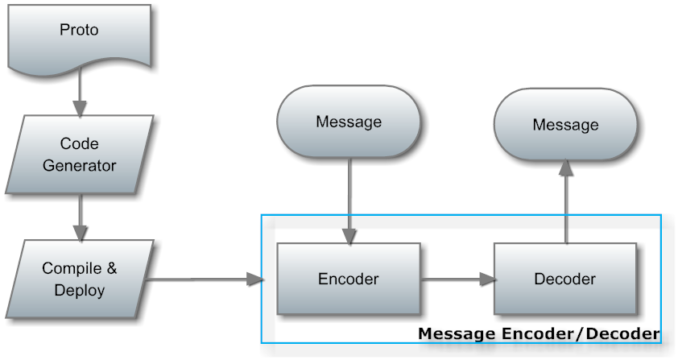
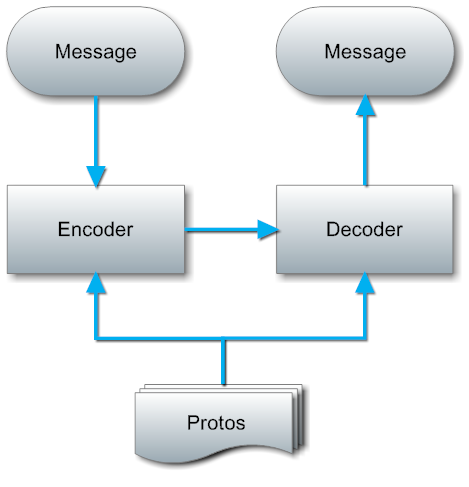

In practice, in order to reduce the data bandwidth cost, improve transmission efficiency, pomelo provides compression on the message, including dictionary-based compression on route and protobuf-based encode/decode for transmission data.
In practice, effective payload ratio in a package of network bandwidth is a worthwhile consideration. In particular, for mobile devices, the network resource is often not rich, in order to save network resource as much as possible, it needs to increase the effective data ratio in a packet .
Routes in pomelo is used to determine how to distribute the request messages and take it to the proper servers and services to be handled. Routes can be divided into two categories, one indicates a service at server-side used by client to sent requests, another indicates a event handler at client-side used to handle the pushed messages sent from server-side.
The former route is automatically generated by the server and it has three fields. For example, a route "area.playerHandler.attack" at server-side, the "area" is type of server that means the request should be forward to an "area" server; "playerHandler" indicates the concrete handler and "attack" indicates the concrete method, the format is "..". Routing information is too long , so the effective payload ratio is very low. For example, in a chat application, if a user's speech is only one character, but the request message has to carry entire route "chat.chatHandler.send".
The latter route is defined by developers, and it is used when server-side would like to push message to clients. Its format is like "onMove" and "onAttack", "on" is the general format. Although developers can define a short route, but that would result in less readable.
Generally, when an application becomes stable, the routes it uses also do not be changed. So we can consider a simple way to compress the routing information by replacing it.
pomelo provides a dictionary-based compression on routes, Currently it only supports hybridconnector, and is unavailable to sioconnector. It works as follows:
For automatically generated routes, which are routing information at the server side with format "..", Dictionary component will scan them and then generate an unique dictionary entry that is an unsigned small integer for each route.
For user-defined routes, which are routing information at client side with format "on", Dictionary component will also generate an unique dictionry entry for every route if the route is list in a configuration file "config/dictionary.json". It requires developers to configure the file by filling the route list.
When dict-based compression is enabled and the underlying connector is hybridconnector, server will send the entire dirctionary to client during handshake phase, so that client and server would have the same specific corresponding relationship between routes and unsigned small integers.
When there is message transmission, the route in the message will automatically be replaced with an unsigned small integer and receiver will automatically restore it. All these is completely transparent to developers.
Now, route compression only works when underlying connector is hybridconnector. Enable this feature is simple, as shown below:
app.set('connectorConfig',
{
connector: pomelo.connectors.hybridconnector,
heartbeat: 3,
useDict: true // enable route compression
}
});The user-defined routing information at client side should be list in the configuration file "config/dictionary.json". Developers can fill the route strings into this file to make route compression enabled for that route. an example for dictionary.json is shown below:
[
"onDropItem",
"onAttack",
"onDied",
"onMove",
"onRevive",
"addEntities",
"onRemoveEntities",
"onPathCheckout"
]Note: For user-defined routing message that is not list in the file dictionary.json, pomelo will still use the original route string without replacing it. Pomelo will check whether the route could be compressed based on the dictionary. If there is a corresponding dictionary entry for the route, then uses the dictionary entry, that is an integer, and if not, pomelo will use the original routing string. All thess is transparent to developers.
Pomelo has implemented encoder/decoder of message using protobuf format. Compared with xml, json, protobuf has better transmission efficiency and smaller size. In our demo project lordofpomelo, the message size encoded using protobuf is 80% smaller than json format on average.
Protobuf is produced by Google Inc. which is mainly used in RPC invocation and file encoding. Protobuf includes two parts: binary-based encoding protocol and metadata-based code generator. When using protobuf in an application, it needs several steps: firstly, write proto file that describes metadata of the message, and then generate encoding/decoding code for specific host language by compiling the .proto file, at last, put the code together into the application's source code. These steps can be shown as follows: 
This way to use protobuf shown in figure above is original, it is high efficient and .proto file is not required at rumtime. But it is too heavyweight. And if a message structure is changed, all these steps including compling .proto file, rebuilding the application, etc. should be re-done, that means it is not flexible and easy to use. More detail on protobuf can be seen at protobuf project.
Since using protobuf in original way is too heavyweight and lack of flexibility, pomelo provides a parser for .proto file, and the parser can work at runtime not compiling time. That means using protobuf in pomelo does not require the code generator, and the parser will parse the .proto files at runtime dynamicly.
Pomelo also provides a generic protobuf encoder/decoder based on the information parsed from the .proto file by the parser. Thus, when messages changes, it only needs to modify the corresponding .proto files without compiling or rebuilding. The way pomelo using protobuf is shown as follows:

Seen from the figure above, comparing with the original way, the solution in pomelo is more flexible and lightweight.
.proto file uses a idl-like format, it can be compiled to generate encoder/decoder, and after compiling, the .proto file does nothing at runtime. However, in pomelo, since we need to dynamically parse the .proto file to encode/decode message at runtime, so it is required to maintain a complete proto type information at runtime. pomelo uses a variant of .proto file, whose syntax is similar to the original proto, but using json format, here is an example:
{
"onMove": {
"required uInt32 entityId": 1,
"message Path": {
"required uInt32 x": 1,
"required uInt32 y": 2
},
"repeated Path path": 2,
"required uInt32 speed": 3
},
"onAttack": {
"required uInt32 attacker": 1,
"required uInt32 target": 2
}
}In pomelo, for the same route of the message such as 'area.playerHander.attack', it may be completely different defined at client side from server side since one is request and another is response. Therefore, we need two sets of protos files, one is for server side, and another for client, as shown below: ! pomelo protobuf protos
Protobuf only works when the underlying connector is hybridconnector now, it does not support sioconnector. Although the implementation of protobuf looks very complicated, since it is completely transparent to developer, it is very easy to use. It is also easy to enable protobuf feature for an existed project:
app.set ('connectorConfig',
{
connector: pomelo.connectors.hybridconnector,
heartbeat: 3,
useProtobuf: true // enable protobuf using
}) ;Actually the necessary is to add "useProtobuf: true". If enabled, pomelo will synchronize the proto files between server side and client side at transport handshake phase, that is similar to route compression.
Secondly, developers need to define .protos file that the application uses. .protos files is placed into /game-server/config directory by default, including two files: serverProtos.json and clientProtos.json. These two .proto's will be automatically loaded by protobuf component if protobuf feature is enabled.
Of course, if some messages has no definition in .proto files, it will use its original encoder/decoder by default.
If there is a message needs protobuf encoding/decoding, just adding its proto definition to the corresponding protos file (serverProtos.json or clientProtos) is Ok, it would not impact messages that have no definition in the .proto files.
In this document, it introduces data compression in pomelo. No matter route compression or protobuf encoding/decoding works only when the underlying connector is hybridconnector. for sioconnector, it uses json as the communication format, it does not support data compression.
{kind=link}